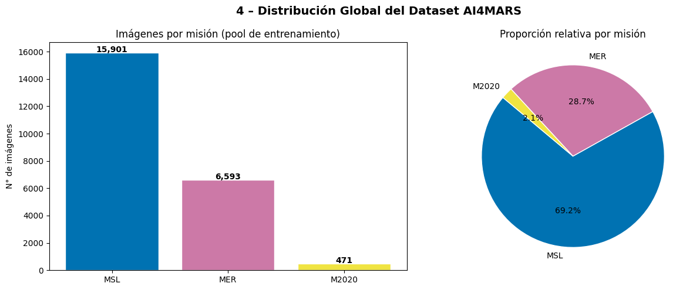
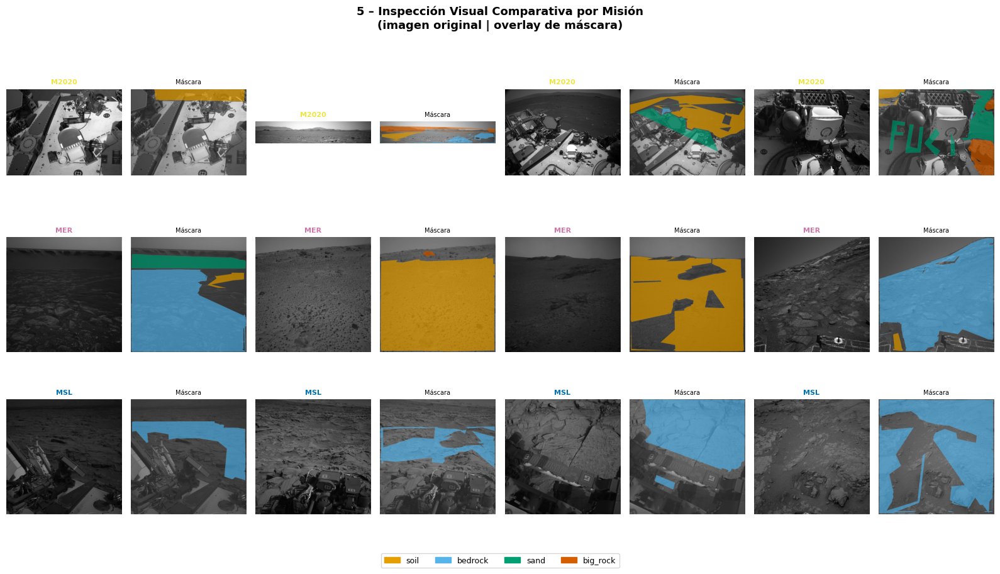
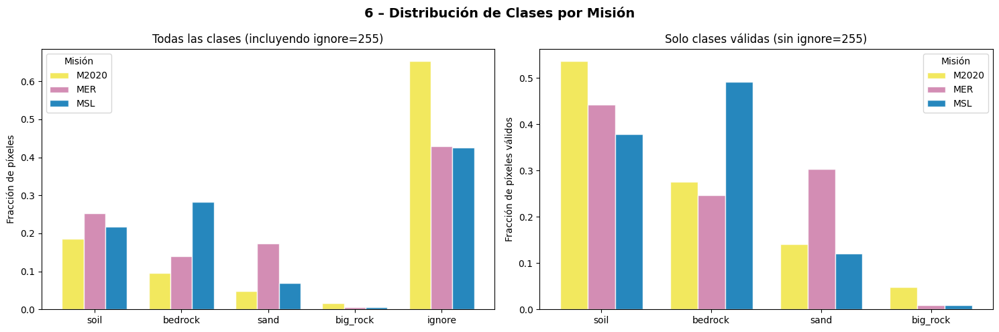
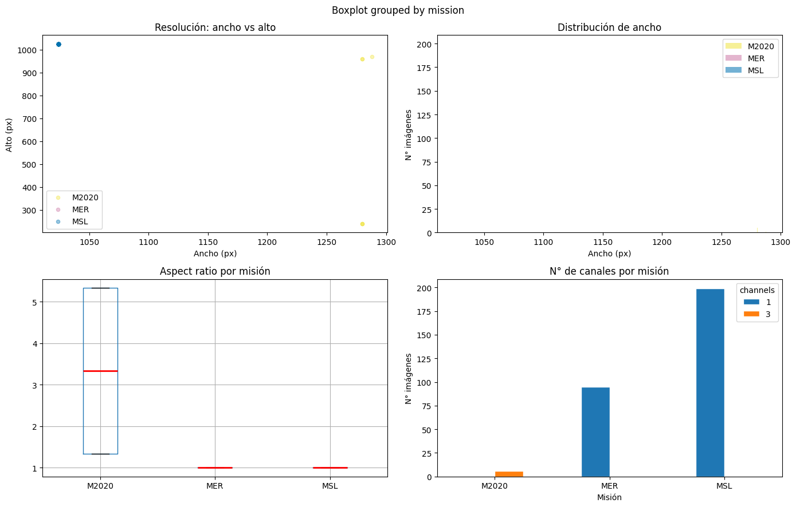
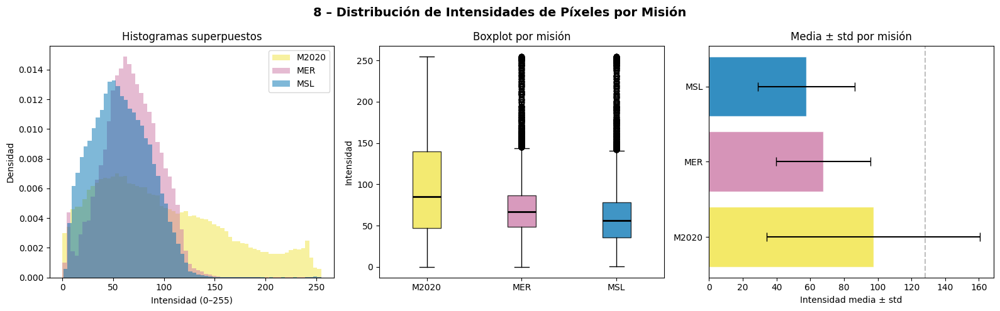
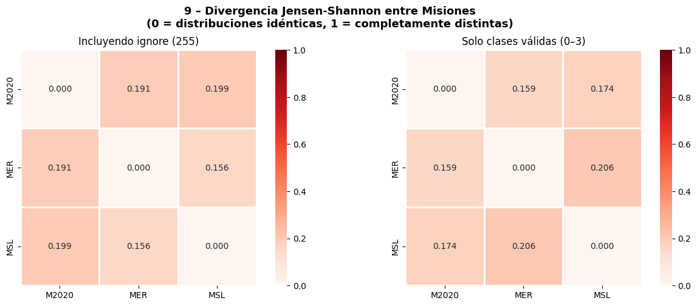
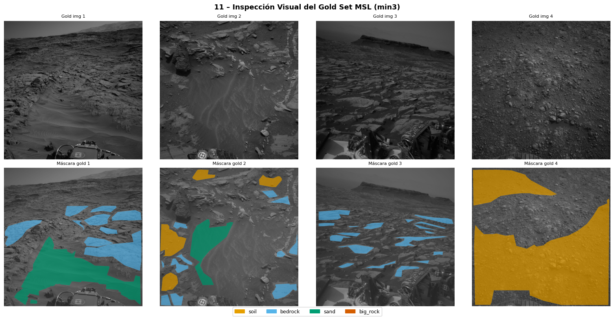

01 — EDA Exploratorio: Dataset AI4MARS Completo#
Entregable 2 – Deep Learning
Estado del Arte, EDA Mejorado e Implementación de Modelos Benchmark
Objetivo de este notebook
Realizar un análisis exploratorio sobre el dataset completo AI4MARS (las tres misiones: MSL, MER y M2020)
con las imágenes originales sin preprocesar. El análisis tiene dos propósitos:
Comprender la estructura global del dataset.
Justificar empíricamente la decisión de restringir el entrenamiento a imágenes de la misión MSL.
Cada sección termina con una caja de implicaciones estructurada en:
[D] Decisión de diseño | [A] Impacto en arquitectura | [R] Riesgo / data leakage
Índice
Configuración e importaciones
Construcción del manifest
Limpieza de máscaras inválidas
Distribución global del dataset
Inspección visual comparativa por misión
Distribución de clases por misión (domain shift)
Dimensionalidad y formato por misión
Distribución de intensidades por misión
Divergencia Jensen-Shannon entre misiones
Decisión justificada: usar solo MSL
Definición del gold set de test (MSL min3)
1. Configuración e importaciones #
import os
import warnings
import hashlib
from pathlib import Path
from collections import defaultdict
import numpy as np
import pandas as pd
import matplotlib.pyplot as plt
import matplotlib.patches as mpatches
import seaborn as sns
from PIL import Image
from tqdm import tqdm
from scipy.spatial.distance import jensenshannon
warnings.filterwarnings("ignore")
# ── Raíz del proyecto: un nivel arriba de notebooks/ ────────────────────────
NOTEBOOK_DIR = Path().resolve()
ROOT = NOTEBOOK_DIR.parent
# ── Directorios de datos (rutas relativas a la raíz) ────────────────────────
MSL_IMG_TRAIN = ROOT / "msl" / "ncam" / "images" / "edr"
MSL_LBL_TRAIN = ROOT / "msl" / "ncam" / "labels" / "train"
MSL_LBL_TEST = ROOT / "msl" / "ncam" / "labels" / "test" / "masked-gold-min3-100agree"
MER_IMG_TRAIN = ROOT / "mer" / "images" / "eff"
MER_LBL_TRAIN = ROOT / "mer" / "labels" / "train" / "merged-unmasked"
M2020_IMG = ROOT / "m2020" / "images" / "ncam"
M2020_LBL = ROOT / "m2020" / "labels" / "NAV"
# ── Directorio de salida (dentro de notebooks/) ──────────────────────────────
PROCESSED_DIR = ROOT / "processed"
PROCESSED_DIR.mkdir(parents=True, exist_ok=True)
# ── Semilla para reproducibilidad ────────────────────────────────────────────
EDA_SEED = 42
print(f"Raíz del proyecto : {ROOT}")
print(f"Processed dir : {PROCESSED_DIR}")
print("\nVerificando rutas de datos:")
for name, path in [
("MSL images train", MSL_IMG_TRAIN),
("MSL labels train", MSL_LBL_TRAIN),
("MSL labels test (gold)", MSL_LBL_TEST),
("MER images", MER_IMG_TRAIN),
("MER labels", MER_LBL_TRAIN),
("M2020 images", M2020_IMG),
("M2020 labels", M2020_LBL),
]:
status = "✓" if path.exists() else "✗ NO ENCONTRADO"
print(f" [{status}] {name}: {path.relative_to(ROOT)}")
Raíz del proyecto : C:\Users\User\Documents\DeepLearning\ai4mars_DL-v3
Processed dir : C:\Users\User\Documents\DeepLearning\ai4mars_DL-v3\notebooks\processed
Verificando rutas de datos:
[✓] MSL images train: msl\ncam\images\edr
[✓] MSL labels train: msl\ncam\labels\train
[✓] MSL labels test (gold): msl\ncam\labels\test\masked-gold-min3-100agree
[✓] MER images: mer\images\eff
[✓] MER labels: mer\labels\train\merged-unmasked
[✓] M2020 images: m2020\images\ncam
[✓] M2020 labels: m2020\labels\NAV
# ── Paleta de colores por clase (colorblind-friendly) ───────────────────────
CLASS_COLORS = {
0: ("#E69F00", "soil"),
1: ("#56B4E9", "bedrock"),
2: ("#009E73", "sand"),
3: ("#D55E00", "big_rock"),
255: ("#999999", "ignore"),
}
CLASS_NAMES = {c: CLASS_COLORS[c][1] for c in [0, 1, 2, 3]}
# ── Paleta por misión ────────────────────────────────────────────────────────
MISSION_COLORS = {"MSL": "#0072B2", "MER": "#CC79A7", "M2020": "#F0E442"}
NUM_CLASSES = 4
IGNORE_INDEX = 255
print("Constantes y paletas definidas.")
print(f"Clases : {list(CLASS_NAMES.values())}")
print(f"Misiones : {list(MISSION_COLORS.keys())}")
Constantes y paletas definidas.
Clases : ['soil', 'bedrock', 'sand', 'big_rock']
Misiones : ['MSL', 'MER', 'M2020']
2. Construcción del manifest #
Se construye un CSV con todas las parejas imagen-máscara del dataset completo.
Las rutas se guardan relativas a la raíz del proyecto para garantizar portabilidad entre máquinas.
La función canonical_name elimina los sufijos _merged y _0LLJ que aparecen en algunos nombres
de archivo de las máscaras, permitiendo el match con los nombres de las imágenes.
def canonical_name(stem: str) -> str:
"""Normaliza el stem de un archivo eliminando sufijos variables."""
stem = stem.replace("_0LLJ", "")
for i in range(1, 100):
stem = stem.replace(f"_merged{i}", "")
stem = stem.replace("_merged", "") # sin número
return stem
def build_manifest(
image_dir: Path,
label_dir: Path,
mission: str,
camera: str,
root: Path,
) -> pd.DataFrame:
"""
Construye un manifest emparejando imágenes y máscaras por canonical_name.
Las rutas se almacenan relativas a `root`.
"""
img_extensions = {".jpg", ".jpeg", ".png"}
images = {}
for img in image_dir.iterdir():
if img.suffix.lower() in img_extensions:
key = canonical_name(img.stem)
images[key] = img
labels = {}
for lbl in label_dir.iterdir():
if lbl.suffix.lower() == ".png":
key = canonical_name(lbl.stem)
labels[key] = lbl
keys = set(images.keys()) & set(labels.keys())
rows = []
for k in sorted(keys):
rows.append({
"mission": mission,
"camera": camera,
"id": k,
"image_path": str(images[k].relative_to(root)),
"mask_path": str(labels[k].relative_to(root)),
"split": "train", # se actualizará para el gold set
})
df = pd.DataFrame(rows)
print(f" {mission:5s} ({camera}): {len(df):>5,} pares imagen-máscara encontrados")
return df
print("Construyendo manifest por misión...")
msl_train_df = build_manifest(MSL_IMG_TRAIN, MSL_LBL_TRAIN, "MSL", "ncam", ROOT)
mer_df = build_manifest(MER_IMG_TRAIN, MER_LBL_TRAIN, "MER", "eff", ROOT)
m2020_df = build_manifest(M2020_IMG, M2020_LBL, "M2020","ncam", ROOT)
# Gold set MSL: split="test", no entra al pool de entrenamiento
msl_gold_df = build_manifest(MSL_IMG_TRAIN, MSL_LBL_TEST, "MSL", "ncam", ROOT)
msl_gold_df["split"] = "test_gold"
print(f" MSL gold set (min3): {len(msl_gold_df):>5,} imágenes de test fijo")
# Manifest completo (incluye gold set con split marcado)
df_all = pd.concat([msl_train_df, mer_df, m2020_df, msl_gold_df], ignore_index=True)
print(f"\nTotal pares encontrados: {len(df_all):,}")
print("\nDistribución por misión:")
print(df_all.groupby(["mission", "split"]).size().to_string())
Construyendo manifest por misión...
MSL (ncam): 16,064 pares imagen-máscara encontrados
MER (eff): 7,391 pares imagen-máscara encontrados
M2020 (ncam): 473 pares imagen-máscara encontrados
MSL (ncam): 322 pares imagen-máscara encontrados
MSL gold set (min3): 322 imágenes de test fijo
Total pares encontrados: 24,250
Distribución por misión:
mission split
M2020 train 473
MER train 7391
MSL test_gold 322
train 16064
3. Limpieza de máscaras inválidas #
Se eliminan las máscaras que no aportan información útil al entrenamiento:
Máscaras con un único valor (vacías).
Máscaras compuestas únicamente por píxeles
ignore(255).
Nota: el gold set de test NO se filtra — se mantiene intacto para preservar la comparabilidad con la literatura.
def is_valid_mask(mask_rel_path: str, root: Path) -> tuple[bool, str]:
"""
Devuelve (es_válida, razón_de_rechazo).
Una máscara es inválida si tiene un único valor o si ese valor es 255.
"""
mask = np.array(Image.open(root / mask_rel_path))
unique = set(np.unique(mask).tolist())
if len(unique) == 1:
return False, "single_value"
if unique == {255}:
return False, "only_ignore"
return True, ""
# Filtrar solo el pool de train (no el gold set)
train_pool = df_all[df_all["split"] == "train"].copy()
gold_set = df_all[df_all["split"] == "test_gold"].copy()
print(f"Verificando {len(train_pool):,} máscaras del pool de entrenamiento...")
valid_flags, reasons = [], []
for _, row in tqdm(train_pool.iterrows(), total=len(train_pool), desc="Limpieza"):
ok, reason = is_valid_mask(row["mask_path"], ROOT)
valid_flags.append(ok)
reasons.append(reason)
train_pool["valid"] = valid_flags
train_pool["reason"] = reasons
# Reporte de eliminaciones
removed = train_pool[~train_pool["valid"]]
print(f"\nMáscaras eliminadas: {len(removed):,}")
print(removed["reason"].value_counts().to_string())
print(f"\nPor misión:")
print(removed.groupby(["mission", "reason"]).size().to_string())
# Dataset limpio
train_clean = train_pool[train_pool["valid"]].drop(columns=["valid", "reason"]).reset_index(drop=True)
print(f"\nPool de entrenamiento limpio: {len(train_clean):,} muestras")
print(train_clean["mission"].value_counts().to_string())
Verificando 23,928 máscaras del pool de entrenamiento...
Limpieza: 100%|██████████| 23928/23928 [03:04<00:00, 129.66it/s]
Máscaras eliminadas: 963
reason
single_value 963
Por misión:
mission reason
M2020 single_value 2
MER single_value 798
MSL single_value 163
Pool de entrenamiento limpio: 22,965 muestras
mission
MSL 15901
MER 6593
M2020 471
# Guardar manifest completo limpio (train pool + gold set)
df_clean = pd.concat([train_clean, gold_set], ignore_index=True)
df_clean.to_csv(PROCESSED_DIR / "manifest_clean.csv", index=False)
print(f"manifest_clean.csv guardado: {len(df_clean):,} muestras totales")
print("\nDesglose final:")
print(df_clean.groupby(["mission", "split"]).size().to_string())
manifest_clean.csv guardado: 23,287 muestras totales
Desglose final:
mission split
M2020 train 471
MER train 6593
MSL test_gold 322
train 15901
Implicaciones – Limpieza de máscaras
[D] Decisión |
Eliminar máscaras vacías o de solo-ignore del pool de entrenamiento. El gold set se mantiene íntegro. |
[A] Arquitectura |
No aplica directamente. |
[R] Riesgo |
Si la proporción de eliminaciones es desigual entre misiones, puede sesgar la representación relativa. Se verifica en la sección siguiente. |
4. Distribución global del dataset #
Análisis de la composición del dataset por misión, cámara y tamaño relativo.
fig, axes = plt.subplots(1, 2, figsize=(13, 5))
fig.suptitle("4 – Distribución Global del Dataset AI4MARS", fontsize=14, fontweight="bold")
# Conteo por misión (solo train pool)
mission_counts = train_clean["mission"].value_counts()
colors_m = [MISSION_COLORS[m] for m in mission_counts.index]
bars = axes[0].bar(mission_counts.index, mission_counts.values, color=colors_m, edgecolor="white")
for bar, val in zip(bars, mission_counts.values):
axes[0].text(
bar.get_x() + bar.get_width() / 2,
bar.get_height() + 50,
f"{val:,}",
ha="center", fontsize=10, fontweight="bold"
)
axes[0].set_ylabel("N° de imágenes")
axes[0].set_title("Imágenes por misión (pool de entrenamiento)")
# Pie: distribución relativa
axes[1].pie(
mission_counts.values,
labels=mission_counts.index,
colors=colors_m,
autopct="%1.1f%%",
startangle=140,
wedgeprops=dict(edgecolor="white")
)
axes[1].set_title("Proporción relativa por misión")
plt.tight_layout()
plt.show()
print("Distribución por misión:")
for mission, count in mission_counts.items():
pct = count / len(train_clean) * 100
print(f" {mission:5s}: {count:>6,} imágenes ({pct:.1f}%)")
print(f"\n Gold set MSL (test fijo): {len(gold_set):>6,} imágenes")

Distribución por misión:
MSL : 15,901 imágenes (69.2%)
MER : 6,593 imágenes (28.7%)
M2020: 471 imágenes (2.1%)
Gold set MSL (test fijo): 322 imágenes
Implicaciones – Distribución global
[D] Decisión |
MSL domina el dataset (~70%). M2020 es fuertemente minoritaria. Cualquier split aleatorio sin estratificación dejaría M2020 sub o sobrerepresentada. |
[A] Arquitectura |
La dominancia de MSL justifica su uso como conjunto principal de entrenamiento. |
[R] Riesgo |
Si se mezclan misiones sin control, el modelo puede aprender características específicas de sensor (cámara NavCam MSL vs EFF MER) en lugar de características de terreno. |
5. Inspección visual comparativa por misión #
Se visualizan muestras aleatorias de cada misión para identificar diferencias visuales sistemáticas: iluminación, resolución, ángulo de cámara y ruido.
def show_mission_samples(
df: pd.DataFrame,
root: Path,
n_per_mission: int = 4,
seed: int = EDA_SEED
) -> None:
"""Visualiza n muestras por misión con su máscara superpuesta."""
missions = sorted(df["mission"].unique())
fig, axes = plt.subplots(
len(missions), n_per_mission * 2,
figsize=(n_per_mission * 4, len(missions) * 3)
)
fig.suptitle(
"5 – Inspección Visual Comparativa por Misión\n(imagen original | overlay de máscara)",
fontsize=13, fontweight="bold"
)
rng = np.random.default_rng(seed)
for row_idx, mission in enumerate(missions):
subset = df[df["mission"] == mission]
chosen = subset.sample(min(n_per_mission, len(subset)), random_state=seed)
for col_idx, (_, sample) in enumerate(chosen.iterrows()):
img = np.array(Image.open(root / sample["image_path"]).convert("L"))
mask = np.array(Image.open(root / sample["mask_path"]))
ax_img = axes[row_idx][col_idx * 2]
ax_mask = axes[row_idx][col_idx * 2 + 1]
ax_img.imshow(img, cmap="gray")
ax_img.set_title(f"{mission}", fontsize=8, fontweight="bold",
color=MISSION_COLORS[mission])
ax_img.axis("off")
# Overlay con colores por clase
overlay = np.zeros((*mask.shape, 4), dtype=np.uint8)
for cls_id, (hex_color, _) in CLASS_COLORS.items():
if cls_id == 255:
continue
rgb = tuple(int(hex_color[i:i+2], 16) for i in (1, 3, 5))
overlay[mask == cls_id] = [*rgb, 180]
overlay[mask == 255] = [150, 150, 150, 60]
ax_mask.imshow(img, cmap="gray")
ax_mask.imshow(overlay)
ax_mask.set_title(f"Máscara", fontsize=7)
ax_mask.axis("off")
# Leyenda global
patches = [
mpatches.Patch(color=CLASS_COLORS[c][0], label=CLASS_COLORS[c][1])
for c in [0, 1, 2, 3]
]
fig.legend(handles=patches, loc="lower center", ncol=4,
fontsize=9, bbox_to_anchor=(0.5, -0.02))
plt.tight_layout()
plt.show()
show_mission_samples(train_clean, ROOT, n_per_mission=4)

Implicaciones – Inspección visual
[D] Decisión |
Las diferencias visuales entre misiones (contraste, granularidad, ángulo) son observables a simple vista. Un modelo entrenado en MSL probablemente no generalizará directamente a MER sin domain adaptation. |
[A] Arquitectura |
Justifica mantener las misiones separadas y no mezclarlas de forma ingenua en el set de entrenamiento. |
[R] Riesgo |
El etiquetado por crowdsourcing puede ser menos consistente en MER y M2020. Las máscaras con ruido estructural en los bordes son inherentes al dataset. |
6. Distribución de clases por misión (domain shift) #
Se mide la distribución de píxeles por clase en cada misión usando muestreo estratificado. Diferencias sistemáticas en esta distribución son evidencia directa de domain shift.
def pixel_counts_by_mission(
df: pd.DataFrame,
root: Path,
sample_per_mission: int = 200,
seed: int = EDA_SEED
) -> dict:
"""Distribución de píxeles por clase para cada misión (fracción del total)."""
results = {}
for mission, group in df.groupby("mission"):
n = min(sample_per_mission, len(group))
sample = group.sample(n, random_state=seed)
counts = defaultdict(int)
for _, row in tqdm(sample.iterrows(), total=n,
desc=f" Contando píxeles {mission}", leave=False):
mask = np.array(Image.open(root / row["mask_path"]))
vals, cnts = np.unique(mask, return_counts=True)
for v, c in zip(vals, cnts):
counts[int(v)] += int(c)
total = sum(counts.values())
results[mission] = {k: v / total for k, v in counts.items()}
return results
print("Calculando distribución de clases por misión...")
dist_mission = pixel_counts_by_mission(train_clean, ROOT, sample_per_mission=200)
missions = sorted(dist_mission.keys())
cls_order = [0, 1, 2, 3, 255]
x = np.arange(len(cls_order))
width = 0.25
fig, axes = plt.subplots(1, 2, figsize=(15, 5))
fig.suptitle("6 – Distribución de Clases por Misión", fontsize=14, fontweight="bold")
# Barras agrupadas
for i, mission in enumerate(missions):
dist = dist_mission[mission]
vals = [dist.get(c, 0) for c in cls_order]
axes[0].bar(x + i * width, vals, width,
label=mission, color=MISSION_COLORS[mission],
edgecolor="white", alpha=0.85)
axes[0].set_xticks(x + width)
axes[0].set_xticklabels([CLASS_COLORS[c][1] for c in cls_order])
axes[0].set_ylabel("Fracción de píxeles")
axes[0].legend(title="Misión")
axes[0].set_title("Todas las clases (incluyendo ignore=255)")
# Solo clases válidas, normalizado
for i, mission in enumerate(missions):
dist = dist_mission[mission]
valid_total = sum(dist.get(c, 0) for c in [0, 1, 2, 3])
if valid_total == 0:
continue
vals = [dist.get(c, 0) / valid_total for c in [0, 1, 2, 3]]
axes[1].bar(np.arange(4) + i * width, vals, width,
label=mission, color=MISSION_COLORS[mission],
edgecolor="white", alpha=0.85)
axes[1].set_xticks(np.arange(4) + width)
axes[1].set_xticklabels([CLASS_COLORS[c][1] for c in [0, 1, 2, 3]])
axes[1].set_ylabel("Fracción de píxeles válidos")
axes[1].legend(title="Misión")
axes[1].set_title("Solo clases válidas (sin ignore=255)")
plt.tight_layout()
plt.show()
print("\nDistribución detallada por misión (clases válidas):")
for mission, dist in dist_mission.items():
valid_total = sum(dist.get(c, 0) for c in [0, 1, 2, 3])
if valid_total == 0:
continue
print(f" {mission}:")
for c in [0, 1, 2, 3]:
print(f" {CLASS_COLORS[c][1]:10s}: {dist.get(c, 0)/valid_total:.3f}")
Calculando distribución de clases por misión...

Distribución detallada por misión (clases válidas):
M2020:
soil : 0.536
bedrock : 0.275
sand : 0.140
big_rock : 0.049
MER:
soil : 0.442
bedrock : 0.246
sand : 0.303
big_rock : 0.009
MSL:
soil : 0.379
bedrock : 0.492
sand : 0.121
big_rock : 0.008
Implicaciones – Distribución de clases por misión
[D] Decisión |
Diferencias en la distribución de clases entre misiones confirman domain shift. No es apropiado mezclar misiones sin técnicas de domain adaptation. |
[A] Arquitectura |
La distribución de clases dentro de MSL (la misión elegida) determina los pesos de la función de pérdida. |
[R] Riesgo |
Un modelo entrenado en MSL verá distribuciones de clase distintas en MER/M2020. Documentar como limitación de generalización. |
7. Dimensionalidad y formato por misión #
Se analiza la distribución de resoluciones de imagen en cada misión. Diferencias en el aspect ratio y resolución entre misiones son indicadores adicionales de domain shift.
def get_image_sizes(
df: pd.DataFrame,
root: Path,
sample_n: int = 300,
seed: int = EDA_SEED
) -> pd.DataFrame:
"""Mide ancho, alto y canales de una muestra de imágenes."""
sample = df.sample(min(sample_n, len(df)), random_state=seed)
records = []
for _, row in tqdm(sample.iterrows(), total=len(sample), desc="Midiendo imágenes"):
img = Image.open(root / row["image_path"])
w, h = img.size
records.append({
"mission": row["mission"],
"width": w,
"height": h,
"channels": len(img.getbands()),
"aspect": w / h,
})
return pd.DataFrame(records)
print("Analizando dimensiones de imagen por misión...")
sizes_df = get_image_sizes(train_clean, ROOT, sample_n=300)
fig, axes = plt.subplots(2, 2, figsize=(14, 9))
fig.suptitle("7 – Dimensionalidad y Formato por Misión", fontsize=14, fontweight="bold")
# Scatter width vs height por misión
for mission in missions:
sub = sizes_df[sizes_df["mission"] == mission]
axes[0][0].scatter(sub["width"], sub["height"],
label=mission, alpha=0.4, s=20,
color=MISSION_COLORS[mission])
axes[0][0].set_xlabel("Ancho (px)"); axes[0][0].set_ylabel("Alto (px)")
axes[0][0].set_title("Resolución: ancho vs alto"); axes[0][0].legend()
# Histograma de ancho por misión
for mission in missions:
sub = sizes_df[sizes_df["mission"] == mission]
axes[0][1].hist(sub["width"], bins=20, alpha=0.55,
color=MISSION_COLORS[mission], label=mission)
axes[0][1].set_xlabel("Ancho (px)"); axes[0][1].set_ylabel("N° imágenes")
axes[0][1].set_title("Distribución de ancho"); axes[0][1].legend()
# Boxplot de aspect ratio por misión
sizes_df.boxplot(column="aspect", by="mission", ax=axes[1][0],
medianprops=dict(color="red", linewidth=2))
axes[1][0].set_title("Aspect ratio (ancho/alto)"); axes[1][0].set_xlabel("")
plt.sca(axes[1][0]); plt.title("Aspect ratio por misión")
# Canales
ch_counts = sizes_df.groupby(["mission", "channels"]).size().unstack(fill_value=0)
ch_counts.plot(kind="bar", ax=axes[1][1], edgecolor="white")
axes[1][1].set_title("N° de canales por misión")
axes[1][1].set_xlabel("Misión"); axes[1][1].set_ylabel("N° imágenes")
axes[1][1].tick_params(axis="x", rotation=0)
plt.tight_layout()
plt.show()
print("\nResumen de dimensiones por misión:")
print(sizes_df.groupby("mission")[["width", "height", "aspect", "channels"]].agg(
["median", "min", "max"]
).round(1).to_string())
Analizando dimensiones de imagen por misión...
Midiendo imágenes: 100%|██████████| 300/300 [00:00<00:00, 1362.42it/s]

Resumen de dimensiones por misión:
width height aspect channels
median min max median min max median min max median min max
mission
M2020 1280.0 1280 1288 600.0 240 968 3.3 1.3 5.3 3.0 3 3
MER 1024.0 1024 1024 1024.0 1024 1024 1.0 1.0 1.0 1.0 1 1
MSL 1024.0 1024 1024 1024.0 1024 1024 1.0 1.0 1.0 1.0 1 1
Implicaciones – Dimensionalidad y formato
[D] Decisión |
Las resoluciones varían entre misiones. Se aplicará resize a 256×256 con interpolación BILINEAR para imágenes y NEAREST para máscaras. |
[A] Arquitectura |
Todos los modelos recibirán input fijo |
[R] Riesgo |
Imágenes con aspect ratio muy distinto de 1:1 pierden información geométrica al hacer resize cuadrado. Documentar como limitación estructural del preprocesamiento. |
8. Distribución de intensidades por misión #
Diferencias en la distribución de intensidades de píxeles entre misiones indican condiciones de iluminación distintas y características de sensor diferentes.
def pixel_intensity_by_mission(
df: pd.DataFrame,
root: Path,
sample_per_mission: int = 150,
px_per_img: int = 1000,
seed: int = EDA_SEED
) -> dict:
"""Extrae muestras de intensidad de píxeles por misión."""
rng = np.random.default_rng(seed)
result = {}
for mission, group in df.groupby("mission"):
n = min(sample_per_mission, len(group))
sample = group.sample(n, random_state=seed)
pixels = []
for _, row in tqdm(sample.iterrows(), total=n,
desc=f" Intensidades {mission}", leave=False):
img = np.array(Image.open(root / row["image_path"]).convert("L")).flatten()
chosen = rng.choice(len(img), size=min(px_per_img, len(img)), replace=False)
pixels.extend(img[chosen].tolist())
result[mission] = np.array(pixels)
return result
print("Analizando distribución de intensidades por misión...")
intensities = pixel_intensity_by_mission(train_clean, ROOT, sample_per_mission=150)
fig, axes = plt.subplots(1, 3, figsize=(16, 5))
fig.suptitle("8 – Distribución de Intensidades de Píxeles por Misión",
fontsize=14, fontweight="bold")
# Histogramas superpuestos
for mission, px in intensities.items():
axes[0].hist(px, bins=64, alpha=0.5, density=True,
color=MISSION_COLORS[mission], label=mission, edgecolor="none")
axes[0].set_xlabel("Intensidad (0–255)"); axes[0].set_ylabel("Densidad")
axes[0].set_title("Histogramas superpuestos"); axes[0].legend()
# Boxplot
bp_data = [intensities[m] for m in missions]
bp_colors = [MISSION_COLORS[m] for m in missions]
bp = axes[1].boxplot(bp_data, labels=missions, patch_artist=True,
medianprops=dict(color="black", linewidth=2))
for patch, color in zip(bp["boxes"], bp_colors):
patch.set_facecolor(color); patch.set_alpha(0.75)
axes[1].set_ylabel("Intensidad"); axes[1].set_title("Boxplot por misión")
# Media y std
means = [np.mean(intensities[m]) for m in missions]
stds = [np.std(intensities[m]) for m in missions]
axes[2].barh(missions, means, xerr=stds,
color=bp_colors, alpha=0.8, edgecolor="white", capsize=5)
axes[2].set_xlabel("Intensidad media ± std")
axes[2].set_title("Media ± std por misión")
axes[2].axvline(128, color="gray", linestyle="--", alpha=0.5)
plt.tight_layout()
plt.show()
print("\nEstadísticas de intensidad por misión:")
for mission, px in intensities.items():
print(f" {mission:5s}: media={np.mean(px):.1f} std={np.std(px):.1f} "
f"p5={np.percentile(px, 5):.0f} p95={np.percentile(px, 95):.0f}")
Analizando distribución de intensidades por misión...

Estadísticas de intensidad por misión:
M2020: media=97.5 std=63.3 p5=13 p95=224
MER : media=67.6 std=27.9 p5=20 p95=112
MSL : media=57.7 std=28.7 p5=14 p95=105
Implicaciones – Intensidades por misión
[D] Decisión |
Diferencias en media/std entre misiones confirman que los sensores tienen características distintas. La normalización debe calcularse solo sobre el train set de MSL para no contaminar val/test. |
[A] Arquitectura |
Si se mezclaran misiones, sería necesario usar batch normalization por misión o técnicas de domain adaptation. |
[R] Riesgo CRÍTICO |
Calcular estadísticas de normalización sobre el dataset completo (incluyendo val/test) constituye data leakage. |
9. Divergencia Jensen-Shannon entre misiones #
La divergencia JS cuantifica formalmente el domain shift entre pares de misiones. Un valor JS > 0.15 indica diferencias distribucionales significativas que requieren atención experimental. Este es el argumento cuantitativo central para justificar la decisión de usar solo MSL.
def get_dist_vector(dist: dict, classes: list) -> np.ndarray:
"""Convierte dict de distribución a vector de probabilidad normalizado."""
vec = np.array([dist.get(c, 1e-9) for c in classes], dtype=float)
return vec / vec.sum()
missions_js = sorted(dist_mission.keys())
n = len(missions_js)
js_full = np.zeros((n, n))
js_valid = np.zeros((n, n))
for i, m1 in enumerate(missions_js):
for j, m2 in enumerate(missions_js):
v_full1 = get_dist_vector(dist_mission[m1], [0, 1, 2, 3, 255])
v_full2 = get_dist_vector(dist_mission[m2], [0, 1, 2, 3, 255])
js_full[i, j] = jensenshannon(v_full1, v_full2)
v_valid1 = get_dist_vector(dist_mission[m1], [0, 1, 2, 3])
v_valid2 = get_dist_vector(dist_mission[m2], [0, 1, 2, 3])
js_valid[i, j] = jensenshannon(v_valid1, v_valid2)
fig, axes = plt.subplots(1, 2, figsize=(13, 5))
fig.suptitle(
"9 – Divergencia Jensen-Shannon entre Misiones\n"
"(0 = distribuciones idénticas, 1 = completamente distintas)",
fontsize=13, fontweight="bold"
)
for ax, matrix, title in zip(
axes,
[js_full, js_valid],
["Incluyendo ignore (255)", "Solo clases válidas (0–3)"]
):
sns.heatmap(
matrix, annot=True, fmt=".3f",
xticklabels=missions_js, yticklabels=missions_js,
ax=ax, cmap="Reds", vmin=0, vmax=1,
linewidths=1, square=True
)
ax.set_title(title)
plt.tight_layout()
plt.show()
print("Divergencia Jensen-Shannon entre misiones (clases válidas 0–3):")
for i, m1 in enumerate(missions_js):
for j, m2 in enumerate(missions_js):
if i < j:
js = js_valid[i, j]
level = "ALTO domain shift" if js > 0.15 else "moderado"
print(f" {m1} vs {m2}: JS = {js:.4f} → {level}")

Divergencia Jensen-Shannon entre misiones (clases válidas 0–3):
M2020 vs MER: JS = 0.1592 → ALTO domain shift
M2020 vs MSL: JS = 0.1744 → ALTO domain shift
MER vs MSL: JS = 0.2056 → ALTO domain shift
Implicaciones – Divergencia Jensen-Shannon
[D] Decisión |
JS > 0.15 entre misiones justifica formalmente no mezclar misiones en el entrenamiento sin domain adaptation explícita. |
[A] Arquitectura |
Un experimento cross-mission (train MSL → test MER/M2020) sería la prueba de generalización OOD natural. Se documenta como trabajo futuro. |
[R] Riesgo |
Mezclar MSL y MER en train sin control puede hacer que el modelo aprenda features de sensor en lugar de features de terreno. |
10. Decisión justificada: usar solo MSL #
Con base en los análisis anteriores, se consolida la decisión de restringir el entrenamiento a imágenes de la misión MSL (rover Curiosity, cámara NavCam).
# Tabla resumen de justificación
justificacion = pd.DataFrame([
{
"Criterio": "Tamaño del conjunto",
"MSL": f"~{len(train_clean[train_clean.mission=='MSL']):,} imágenes (>70% del dataset)",
"MER": f"~{len(train_clean[train_clean.mission=='MER']):,} imágenes",
"M2020": f"~{len(train_clean[train_clean.mission=='M2020']):,} imágenes",
"Decisión": "MSL es el conjunto más grande y representativo"
},
{
"Criterio": "Domain shift (JS vs MSL)",
"MSL": "0.000 (referencia)",
"MER": f"{js_valid[missions_js.index('MSL'), missions_js.index('MER')]:.3f}",
"M2020": f"{js_valid[missions_js.index('MSL'), missions_js.index('M2020')]:.3f}",
"Decisión": "JS > 0.15 → mezcla sin domain adaptation es inapropiada"
},
{
"Criterio": "Consistencia de sensor",
"MSL": "NavCam (homogéneo)",
"MER": "EFF (resolución y ángulo distintos)",
"M2020": "NavCam (similar a MSL pero pocos datos)",
"Decisión": "MSL tiene el sensor más consistente con más datos"
},
{
"Criterio": "Gold set estándar",
"MSL": "322 imágenes validadas por JPL (min3)",
"MER": "Test set disponible pero distinto dominio",
"M2020": "Sin gold set público",
"Decisión": "Solo MSL tiene gold set comparable con la literatura"
},
{
"Criterio": "Precedente en literatura",
"MSL": "Li et al. (2024), Mohammad et al. (2024)",
"MER": "No usado como conjunto principal",
"M2020": "No usado como conjunto principal",
"Decisión": "MSL permite comparabilidad directa con el estado del arte"
},
])
print("Resumen de justificación para el uso exclusivo de MSL:")
print("=" * 80)
for _, row in justificacion.iterrows():
print(f"\n► {row['Criterio']}")
print(f" MSL : {row['MSL']}")
print(f" MER : {row['MER']}")
print(f" M2020 : {row['M2020']}")
print(f" → {row['Decisión']}")
# Guardar manifest solo MSL
msl_train_clean = train_clean[train_clean["mission"] == "MSL"].reset_index(drop=True)
msl_train_clean.to_csv(PROCESSED_DIR / "manifest_msl_train.csv", index=False)
print(f"\nmanifest_msl_train.csv guardado: {len(msl_train_clean):,} imágenes MSL limpias")
Resumen de justificación para el uso exclusivo de MSL:
================================================================================
► Tamaño del conjunto
MSL : ~15,901 imágenes (>70% del dataset)
MER : ~6,593 imágenes
M2020 : ~471 imágenes
→ MSL es el conjunto más grande y representativo
► Domain shift (JS vs MSL)
MSL : 0.000 (referencia)
MER : 0.206
M2020 : 0.174
→ JS > 0.15 → mezcla sin domain adaptation es inapropiada
► Consistencia de sensor
MSL : NavCam (homogéneo)
MER : EFF (resolución y ángulo distintos)
M2020 : NavCam (similar a MSL pero pocos datos)
→ MSL tiene el sensor más consistente con más datos
► Gold set estándar
MSL : 322 imágenes validadas por JPL (min3)
MER : Test set disponible pero distinto dominio
M2020 : Sin gold set público
→ Solo MSL tiene gold set comparable con la literatura
► Precedente en literatura
MSL : Li et al. (2024), Mohammad et al. (2024)
MER : No usado como conjunto principal
M2020 : No usado como conjunto principal
→ MSL permite comparabilidad directa con el estado del arte
manifest_msl_train.csv guardado: 15,901 imágenes MSL limpias
Implicaciones – Decisión MSL
[D] Decisión |
Se usa exclusivamente el subconjunto MSL para entrenamiento y validación. El gold set MSL min3 es el test fijo. |
[A] Arquitectura |
No se requieren técnicas de domain adaptation en los modelos benchmark. Se documenta como extensión futura. |
[R] Riesgo |
Al restringir a MSL, el modelo no verá variabilidad de sensor de MER/M2020. La generalización a otras misiones queda fuera del alcance del entregable. |
11. Definición del gold set de test (MSL min3) #
El gold set corresponde a 322 imágenes MSL con máscaras validadas por científicos del JPL
con mínimo 3 etiquetadores en acuerdo al 100% (masked-gold-min3-100agree).
Este conjunto se usa como test fijo, completamente separado del pool de entrenamiento.
print(f"Gold set MSL (min3): {len(gold_set):,} imágenes")
# Verificar que no haya overlap entre el pool de train y el gold set
train_ids = set(msl_train_clean["id"].tolist())
gold_ids = set(gold_set["id"].tolist())
overlap = train_ids & gold_ids
print(f"\nVerificación de data leakage:")
print(f" IDs en train MSL : {len(train_ids):,}")
print(f" IDs en gold set : {len(gold_ids):,}")
print(f" Overlap (leakage) : {len(overlap)}")
assert len(overlap) == 0, (
f"DATA LEAKAGE: {len(overlap)} imágenes aparecen en train Y en el gold set de test."
)
print(" ✓ Sin overlap — gold set completamente separado del pool de entrenamiento")
# Guardar gold set
gold_set.to_csv(PROCESSED_DIR / "manifest_msl_gold_test.csv", index=False)
print(f"\nmanifest_msl_gold_test.csv guardado.")
# Inspección visual del gold set
fig, axes = plt.subplots(2, 4, figsize=(16, 8))
fig.suptitle("11 – Inspección Visual del Gold Set MSL (min3)",
fontsize=13, fontweight="bold")
sample_gold = gold_set.sample(4, random_state=EDA_SEED)
for col_idx, (_, row) in enumerate(sample_gold.iterrows()):
img = np.array(Image.open(ROOT / row["image_path"]).convert("L"))
mask = np.array(Image.open(ROOT / row["mask_path"]))
axes[0][col_idx].imshow(img, cmap="gray")
axes[0][col_idx].set_title(f"Gold img {col_idx+1}", fontsize=8)
axes[0][col_idx].axis("off")
overlay = np.zeros((*mask.shape, 4), dtype=np.uint8)
for cls_id, (hex_color, _) in CLASS_COLORS.items():
if cls_id == 255:
continue
rgb = tuple(int(hex_color[i:i+2], 16) for i in (1, 3, 5))
overlay[mask == cls_id] = [*rgb, 180]
overlay[mask == 255] = [150, 150, 150, 60]
axes[1][col_idx].imshow(img, cmap="gray")
axes[1][col_idx].imshow(overlay)
axes[1][col_idx].set_title(f"Máscara gold {col_idx+1}", fontsize=8)
axes[1][col_idx].axis("off")
patches = [
mpatches.Patch(color=CLASS_COLORS[c][0], label=CLASS_COLORS[c][1])
for c in [0, 1, 2, 3]
]
fig.legend(handles=patches, loc="lower center", ncol=4,
fontsize=9, bbox_to_anchor=(0.5, -0.02))
plt.tight_layout()
plt.show()
Gold set MSL (min3): 322 imágenes
Verificación de data leakage:
IDs en train MSL : 15,901
IDs en gold set : 322
Overlap (leakage) : 0
✓ Sin overlap — gold set completamente separado del pool de entrenamiento
manifest_msl_gold_test.csv guardado.

Implicaciones – Gold set de test
[D] Decisión |
El gold set MSL min3 es el test set fijo para todos los modelos. Nunca se usa en entrenamiento ni validación. Los resultados sobre este set son los reportados en el benchmark final. |
[A] Arquitectura |
Las métricas del gold set son comparables directamente con Li et al. (2024) y Mohammad et al. (2024). |
[R] Riesgo CRÍTICO |
Cualquier inspección de las máscaras gold durante el diseño del modelo constituye data leakage. Este notebook solo verifica el conteo y la separación — no analiza la distribución de clases del gold set. |
Archivos generados por este notebook#
Archivo |
Descripción |
Usado en |
|---|---|---|
|
Todas las muestras válidas (train pool + gold set) |
Referencia general |
|
Solo imágenes MSL limpias para entrenamiento |
|
|
Gold set MSL min3 (test fijo) |
Notebooks de evaluación |
|
Todas las figuras de este notebook |
Jupyter Book |
Próximo paso:
02_preprocessing.ipynb— Resize a 256×256, generación del split train/val sobre el pool MSL, y cálculo de estadísticas de normalización solo sobre train.